stands for any bilinear product in Clifford algebra and 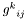 is a 3-valence tensor whose entries are either minus one, zero or one. This tensor encodes the particular bilinear product.
stands for any bilinear product in Clifford algebra and 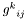 is a 3-valence tensor whose entries are either minus one, zero or one. This tensor encodes the particular bilinear product.
 . Hence, the algebra has a -dimensional basis. If we denote the basis vectors by 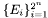 , then a general multivector can be expressed as
. Hence, the algebra has a -dimensional basis. If we denote the basis vectors by 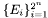 , then a general multivector can be expressed as 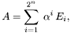
where the 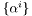 are scalar components. The geometric, inner and outer products between multivectors are basically bilinear functions that can be written as follows.
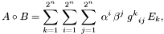
where stands for any bilinear product in Clifford algebra and 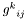 is a 3-valence tensor whose entries are either minus one, zero or one. This tensor encodes the particular bilinear product.
What the function GetMVProductMatrix does is, given a multivector  and a particular product, to evaluate the matrix
and a particular product, to evaluate the matrix
![\[ {h^k}_j = \sum_{i=1}^{2^n}\;\alpha^i\,{g^k}_{ij}, \]](form_77.png)
where the are the components of the multivector . The idea is that this allows you to solve multivector equations like 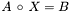 for 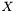 . This becomes clear when we write down this equation in terms of components.
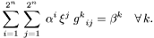
If we write this as
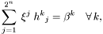
where 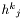 is defined as above, then this is a simple matrix equation which can be solved by inverting the matrix . Note that if the multivector 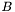 in this example were simply the scalar 1, then this method gives you the inverse of the multivector .
GetMVProductMatrix, where instead of a single multivector, you give a list of multivectors. For each multivector a matrix of the form of is then evaluated and all those matrices are stacked on top of each other.
Another way to enforce uniqueness of a solution is to look for solutions of a multivector equation in a certain subspace of the algebra. This can be done with the Mask parameter. With the mask parameter you can set which algebra dimensions should be used in the generation of the matrix . This is best explained with an example. Suppose you want to find all those multivectors that satisfy the equation 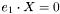 in Euclidean space, i.e. the null space of  .
.
// Define the basis variables for Euclidean space DefVarsE3(); // Define a multivector variable as e1 A = e1; // Generate the multivector product matrix of A // for the inner product MA = GetMVProductMatrix(A, MVOP_INNER); // Find the null space of MA with a // singular value decomposition W = SVD(MA); // Transform the diagonal matrix of the // singular values to a row vector and // display it ?Diag = DiagToRow(W(2));
The output generated by this script is the following.
Diag = (| 0 0 0 0 1 1 1 1|)
Since there are four singular values that are zero, the null space of MA is four-dimensional. The basis multivectors of this null space are first four columns of the matrix W[3] that was returned from the SVD. These column vectors can be transformed back into actual multivectors with the function Matrix2MV. The following piece of code has to be appended to the above code.
// Transform the singular vectors to multivectors V = Matrix2MV(W(3)); // Print the first four (singular) multivector which // span the basis of the null space of e1 // w.r.t. the inner product. ?V(1); ?V(2); ?V(3); ?V(4); // Test the caluculation by evaluating the // inner product with all singular multivectors. ?A . V;
This produces the following output.
Constant = -1^e23 Constant = 1 Constant = -1^e3 Constant = 1^e2 Constant = ([], [], [], [], [ -1 ], [ -1^e3 ], [ -1^e23 ], [ -1^e2 ])
This show that the algebraic basis that spans the null space of w.r.t. the inner product is given by 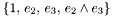 .
We see that this solution is not unique. But, suppose we were only interested in the bivectors that lie in the null space of w.r.t. the inner product. This can be evaluated directly by using the mask parameter of GetMVProductMatrix. The length of the mask list passed to this function must be the same as the algebra dimensions. For example, for Euclidean space the mask list must have 8 entries, and for projective space it must have 16 entries. Each entry in a mask list stands for an algebra dimension. If an entry in the mask list is zero, then the respective algebra dimension will be neglected. The non-zero entries of the mask must have entries counting up from 1 to the number of dimensions the solution space has. However, two or more entries in the mask can also have the same integer number. This expresses the fact that these dimensions should have the same scalar factor in the solution space. This is again best explained by using the above example. The following code only evaluates bivector solutions.
// Define the basis variables for Euclidean space DefVarsE3(); // Define a multivector variable as e1 A = e1; // Generate a mask for all bivector components Mask = [0, Scalar 0, 0, 0, Vector 1, 2, 3, Bivector 0 Trivector (Pseudoscalar) ]; // Generate the multivector product matrix of A // for the inner product. Apply the mask // such that only bivector components are // considered. MA = GetMVProductMatrix(A, MVOP_INNER, Mask); // Find the null space of MA with a // singular value decomposition W = SVD(MA); // Transform the diagonal matrix of the // singular values to a row vector and // display it ?Diag = DiagToRow(W(2)); // Transform the singular vectors to multivectors. // Now you need to specify the mask again, such // that the matrix components are mapped to the // correct multivector components. ?V = Matrix2MV(W(3), Mask); // Print the first(singular) multivector // which spans the basis of the bivector // null space of e1 w.r.t. the inner product. ?V(1); // Test the caluculation by evaluating the // inner product with all singular multivectors. ?A . V;
From the singluar value diagonal matrix we see that this time the solution is unique, i.e. there exists only a single bivector the lies in the null space of w.r.t. the inner product.
If you replace the definition of the mask in the above example by
// Generate a mask for vector components. // Enforce that e2 and e3 are regarded as // one dimension in the solution space // and must have the same scalar factor. Mask = [0, Scalar 1, 2, 2, Vector (e1, e2, e3) 0, 0, 0, Bivector (e23, e31, e12) 0 Trivector (Pseudoscalar) ];
then the solution space is two dimensional, whereby the first dimension refers to and the second dimension to 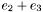 . (It is no mistake that vector components of the mask are numbered 1, 2, 2.) The output is now as follows.
Diag = (| 0 1|) V = ([ 1^e2 + 1^e3 ], [ -1^e1 ]) Constant = 1^e2 + 1^e3 Constant = ([], [ -1 ])
We see that the solution is again unique.
DefVarsE3(); // Define variables for E3 A = e1; // Define multivector A B = e2; // Define multivector B // Evaluate the matrix for the product A * B of the // components of A summed over index i of the // tensor g^k_ij representing the geometric product. Agp = GetMVProductMatrix(A, MVOP_GP, 1 from left ); // Do the same for product B * A with components of A gpA = GetMVProductMatrix(A, MVOP_GP, 0 from right ); // Transform multivector B in matrix representation. // Bm is a column vector. Bm = MV2Matrix(B); C1m = Agp * Bm; // Evaluate A B C2m = gpA * Bm; // Evaluate B A ?C1 = Matrix2MV(C1m); // Transform C1m back to a multivector ?C2 = Matrix2MV(C2m); // Transform C2m back to a multivector
In this example the geometric product matrix for A was evaluated twice: assuming that A is multiplied from the left (Agp = GetMVProductMatrix(A, MVOP_GP, 1)) and assuming it is multiplied from the right (gpA = GetMVProductMatrix(A, MVOP_GP, 0)). Therefore, the matrix product of Agp with Bm is equivalent to the geometric product A * B, and the matrix product of gpA with Bm is equivalent to the geometric product B * A.
This feature is necessary to solve a versor equation of the form 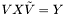 , where and 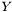 are known and 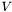 is the unknown. To make a proper versor, it has to satisfy the constraint 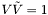 . This constraint can be used to write the versor equation from above in a slightly different way.
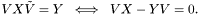
At first sight, it does not seem to be possible to solve this equation for . However, if we transform it into a matrix equation it may be written as
gpX * Vm - Ygp * Vm = 0
gpX = GetMVProductMatrix(X, MVOP_GP, 0 from right ); Ygp = GetMVProductMatrix(Y, MVOP_GP, 1 from left ); Vm = MV2Matrix(V);
This means, that we are simply looking for the null space of the matrix (gpX - Ygp). If we also enforce that the result can only have scalar and bivector components using a mask, then all the constraints we need are enforced implicitly. That is, the resulting null space has to consist of versors and nothing else. If we use a singular value decomposition (SVD) to find the null space, then the best versor in a least squares sense should be found.
Note that it may be shown that the dimension of the null space of the matrix (gpX - Ygp) is always a power of two. For each constraint data pair (X,Y), which is taken into account, the power of the dimension of the null space of the matrix is at most reduced by one. The following example will help to clarify this.
// Mask for scalar and bivector components Mask = [1, 0, 0, 0, 2, 3, 4, 0]; // Create a rotor which we later want to find again ?R = RotorE3(0,1,0, Pi/4); // Data points A1 = VecE3(1,0,0); // Rotate A1 with R ?B1 = R * A1 * ~R; // Create matrices gpA1 = GetMVProductMatrix(A1, MVOP_GP, Mask, 0 right ); B1gp = GetMVProductMatrix(B1, MVOP_GP, Mask, 1 left ); // The matrix from which we need to find the null space M = gpA1 - B1gp; // Evaluate SVD L = SVD(M); // Diagonal of SVD as row vector ?Diag = DiagToRow(L(2)); // There are two solutions. // Transform the matrix L(3) which contains the // singular vectors as columns to multivectors. MV = Matrix2MV(L(3), Mask); // The first two multivectors in list MV are // solutions to the equation. ?""; ?"Solutions for versor:"; ?V1 = MV(1); ?V2 = MV(2); // Check this ?""; ?"Check solutions:"; ?Sol1 = V1 * A1 * ~V1; ?Sol2 = V2 * A1 * ~V2;
The output of this code is
R = 0.924 + -0.383^e31
B1 = 0.707^e1 + -0.707^e3
Diag = (| 0 0 2 2|)
Solutions for versor:
V1 = 0.924 + -0.383^e31
V2 = -0.924^e23 + 0.383^e12
Check solutions:
Sol1 = 0.707^e1 + -0.707^e3
Sol2 = 0.707^e1 + -0.707^e3
Even though the solution space was already reduced by the mask, there are still two solutions. This is because a rotation is not properly constrained by just one point pair. Note that instead of points we can also use any other geometric entity which can be represented in geometric algebra. Here is the same script with two point pairs.
DefVarsE3(); // Mask for scalar and bivector components Mask = [1, 0, 0, 0, 2, 3, 4, 0]; // Create a rotor which we later want to find again ?R = RotorE3(0,1,0, Pi/4); // Data points // This can also be mixed points, planes in E3. // In P3 or N3 any other geometric entities could be used. A = [VecE3(1,0,0), VecE3(0,0,1)]; // Rotate data points A with R ?B = R * A * ~R; // Create matrices // Since A and B are now a lists of multivectors, // an appropriate matrix which stack the separate // matrices for each multivector on top of each other // is generated. gpA = GetMVProductMatrix(A, MVOP_GP, Mask, 0 right ); Bgp = GetMVProductMatrix(B, MVOP_GP, Mask, 1 left ); // The matrix from which we need to find the null space M = gpA - Bgp; // Evaluate SVD L = SVD(M); // Diagonal of SVD as row vector ?Diag = DiagToRow(L(2)); // There is now only one solution. // Transform the matrix L(3) which contains the // singular vectors as columns to multivectors. MV = Matrix2MV(L(3), Mask); // The first multivector in list MV is the // solution to the equation. ?""; ?"Solution for versor:"; ?V = MV(1); // Check this ?""; ?"Check solution:"; ?Sol = V * A * ~V;
The output created is the following,
R = 0.924 + -0.383^e31
B = ([ 0.707107^e1 + -0.707107^e3 ], [ 0.707107^e1 + 0.707107^e3 ])
Diag = (| 0 2 2 2.828427|)
Solution for versor:
V = 0.924 + -0.383^e31
Check solution:
Sol = ([ 0.707107^e1 + -0.707107^e3 ], [ 0.707107^e1 + 0.707107^e3 ])